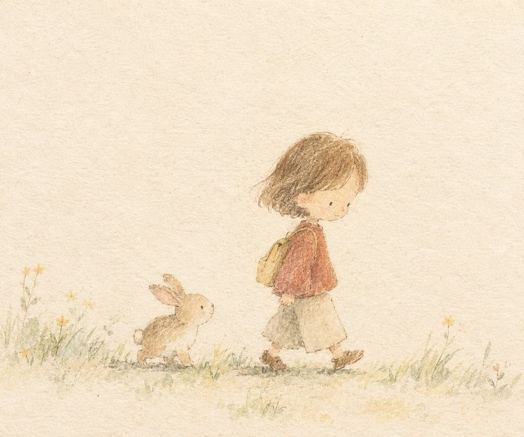
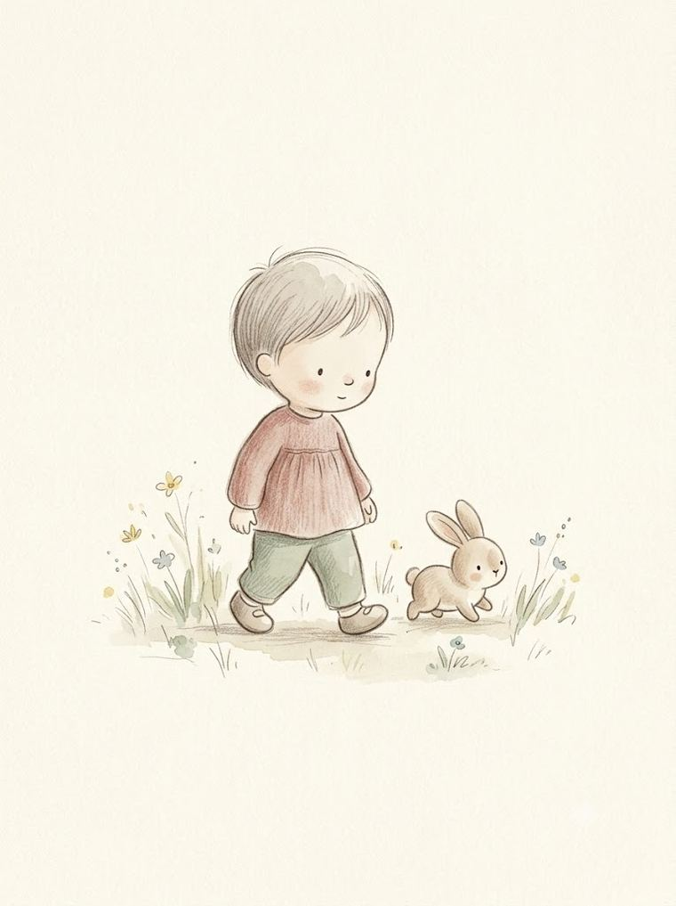
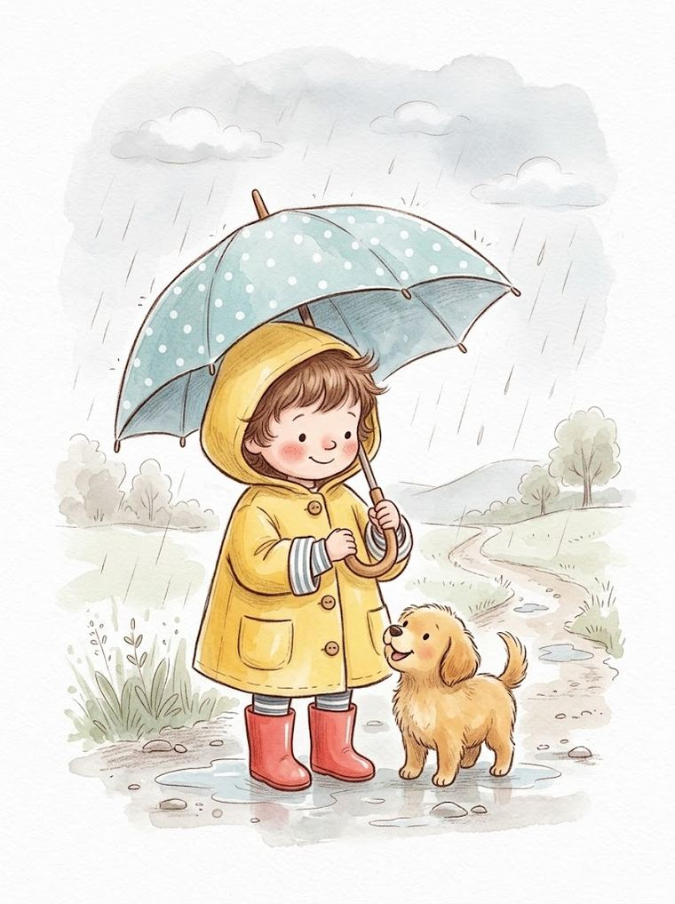
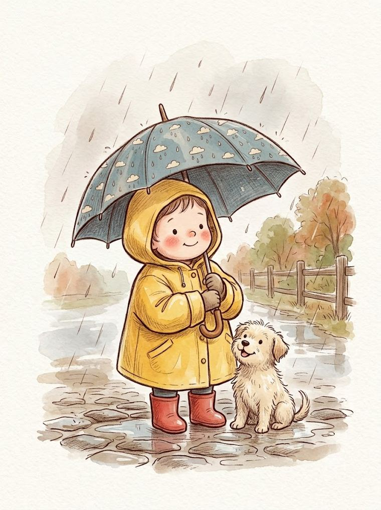
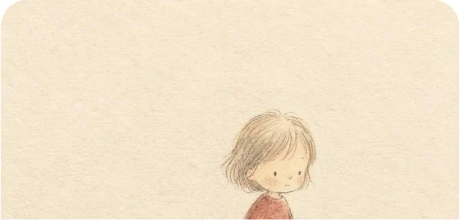
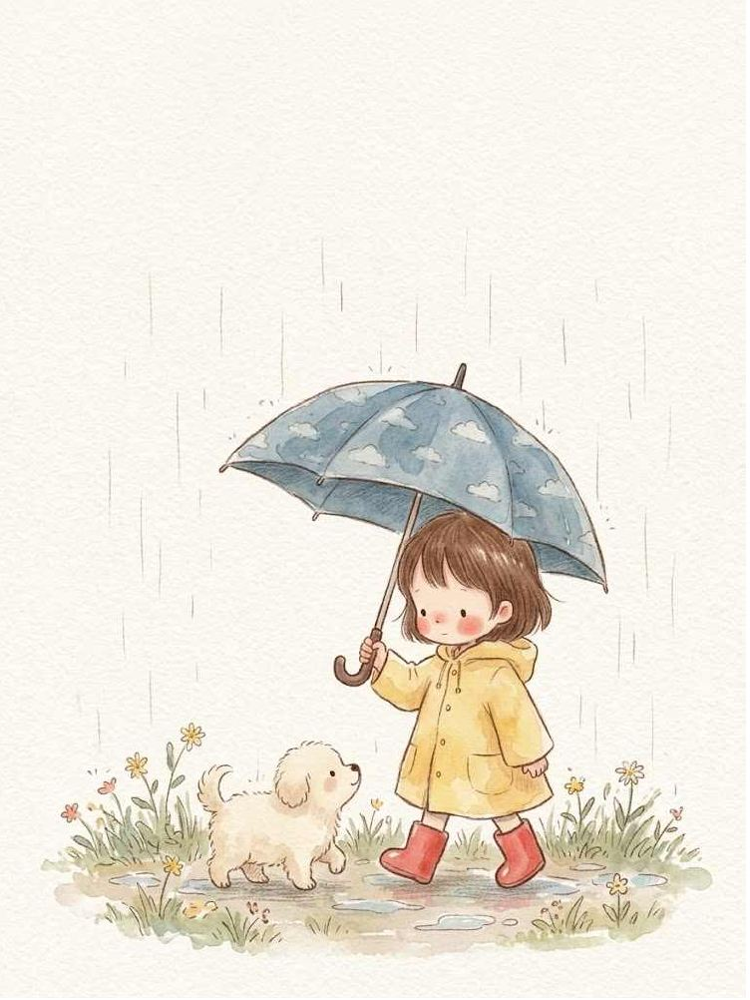

STEP 1 · 오늘의 한 문장
AI마다 그림 손맛이 달라요.
그러니 규칙은 분석해서 쓰고,
느낌은 기준 그림으로 맞춰요.
이렇게 플랫폼마다 다른 결과를 비슷하게 맞추는 걸 평탄화라고 부를게요.
오늘 가는 길
오늘 쓰는 말
- 글로 그림 그리기 (T2I, Text-to-Image)
프롬프트를 넣으면 그림이 나오는 것 - 규칙 (스타일 분석 결과)
머리 크기, 눈 모양, 색, 여백처럼 말로 정리한 특징 - 기준 그림 (참조 이미지, 앵커 이미지)
"이 느낌으로 그려" 하고 같이 넣는 그림 - 평탄화
플랫폼마다 들쭉날쭉한 결과를 평평하게 맞추기
지난 시간에 한 것
- 지피티 작업 방(프로젝트) 만들기
- GoFullPage로 핀터레스트 보드를 한 장에 캡처
- 지피티에게 화풍 분석시키고, 틀린 곳 찾아보기
- 그 분석으로 프롬프트 만들어 그림 그리기
오늘은 여기서 생긴 "이상한 일"부터 봅니다.
지피티 vs 제미나이 — 같은 말, 다른 그림
지난 시간 한 순서 그대로예요. 지피티로 분석해서 그린 그림과, 같은 프롬프트를 제미나이에 넣은 그림을 나란히 봐요.
지피티로 분석하고, 지피티로 그렸어요

레퍼런스 보드에서 본 느낌이 꽤 살아 있어요.
- 종이 결이 보여요
- 연필선이 살짝 떨려요
- 위쪽이 넓게 비어 있어요
같은 프롬프트를 제미나이에 넣었어요

글자 하나 안 바꿨는데 그림이 달라졌어요.
- 종이 결이 거의 없어요
- 선이 깨끗하고 고르게 그어졌어요
- 아이가 화면 한가운데 있어요
그래도 아이, 토끼, 풀밭, 색은 다 맞게 그렸어요. 무엇을 그릴지는 지켰고, 어떤 손맛으로 그릴지가 달라졌어요.
레퍼런스와 다름생각해 보기 — 지피티가 쓴 프롬프트라서 제미나이와 안 맞은 걸까요?
제미나이가 직접 분석해도
"지피티가 쓴 프롬프트라서 안 맞았나?" 그래서 제미나이한테 직접 분석부터 시켜 봤어요.
그럼 제미나이한테 직접 분석시키고 그리게 했어요


제미나이가 직접 분석하고, 직접 프롬프트를 만들고, 직접 그렸어요. 그런데도 여전히 제미나이 그림이에요. 굵은 외곽선, 꽉 찬 배경, 선명한 원색.
제미나이가 스스로 만든 체크리스트로 채점하면
자기가 만든 기준에 자기 그림이 떨어졌어요. 분석을 잘하는 것과 그 분석대로 그리는 것은 다른 일이에요.
그래서 알게 된 것
누가 분석하든, 그림은 그 플랫폼이 가진 손맛을 따라가요.
그래서 알게 된 것
생각해 보기 — STEP 2의 질문, 이제 답할 수 있나요? 프롬프트 탓이 아니라 플랫폼 탓이었어요.
평탄화하기 — 규칙은 분석으로, 느낌은 기준 그림으로
말로는 플랫폼 손맛을 못 이겨요. 그럼 그림을 보여 주면 돼요. 규칙은 분석해서 글로, 느낌은 기준 그림으로 같이 넣어요.
평탄화는 이렇게 생겼어요
두 가지를 따로 준비해서, 같이 넣어요
실제로 해 봤어요

STEP 2의 깨끗한 디지털 그림과 비교해 보세요. 같은 플랫폼이 이렇게 달라졌어요.
선생님 시연
수업 시간에 기준 그림을 넣기 전과 후를 바로 눈앞에서 보여 줄게요.
알아 두기: 주인공도 따라와요
기준 그림을 넣었더니 제미나이의 남자아이가 단발머리 여자아이로 바뀌었어요. 기준 그림은 느낌뿐 아니라 주인공까지 데려와요.
동화책에서는 오히려 좋아요. 그림 한 장으로 화풍과 주인공을 한 번에 고정할 수 있으니까요.
말로 고쳐 달라고 하면 어디까지 될까

제미나이에게 자기 그림의 문제를 찾게 하고 다시 그리게 했더니 여백이 생겼어요. 그래도 외곽선은 깨끗하게 닫혀 있고 색은 아직 진해요. 말로는 7~8할까지, 나머지 손맛은 기준 그림이 맞춰요.
그대로 써 보는 문장
주의
기준 그림은 내가 만든 그림만 넣어요. 레퍼런스 작가의 원작은 넣지 않아요. (STEP 6)
첫 그림 고르는 질문 세 개
- 종이 느낌이 또렷하게 보이나?
- 체크리스트 4개 중 3개 이상 통과하나?
- 이 주인공으로 여러 장을 이어 갈 수 있나?
"예쁜 그림"보다 "느낌이 또렷한 그림"을 골라요. 흐린 그림을 기준으로 삼으면 뒤에 나오는 그림도 다 흐려져요.
생각해 보기 — 고르는 건 AI일까요, 나일까요? 마지막 판단은 사람이 해요(HITL).
따라 하기
오늘 뽑은 그림 중 느낌이 제일 좋은 한 장을 고르세요. 그 그림을 기준 그림으로 넣고 위 문장으로 장면 하나를 바꿔 보세요.
한 걸음 더
같은 기준 그림과 같은 문장을 지피티와 제미나이에 둘 다 넣어 보세요. STEP 2 때보다 두 그림이 얼마나 가까워졌나요? 그게 평탄화예요.
저작권과 정리
우리는 실제로 출판할 책을 만들어요. 화풍은 배워도 되지만, 장면을 베끼면 안 돼요.
되는 것과 안 되는 것
○ 해도 돼요
- 여러 그림을 보고 공통 규칙 뽑기
- 그 규칙을 내 말로 프롬프트에 쓰기
- 내가 만든 그림을 기준 그림으로 쓰기
- 레퍼런스 작가를 "공부한 작가"로 소개하기
✕ 하면 안 돼요
- 프롬프트에 작가 이름 넣기
- 작가의 원작을 기준 그림으로 넣기
- 보드에 있던 장면을 그대로 다시 그리기
- "딱 봐도 그 그림"인 결과 쓰기
실제로 있었던 일
STEP 3의 우비 그림, 기억나죠? 제미나이가 예시로 제안한 장면이었는데, 레퍼런스 보드에 있던 그림의 장면을 그대로 옮긴 것이었어요. 화풍을 배운 게 아니라 작품을 따라간 거예요.
반대로 지피티의 "들판을 걷는 아이와 토끼"는 보드에 없는 새 장면이었어요.
출판 전 체크리스트
| 1. 프롬프트에 작가 이름이 없다 | □ |
| 2. 기준 그림은 전부 내가 만든 그림이다 | □ |
| 3. 보드에 있던 장면과 같은 장면이 아니다 | □ |
| 4. 원작과 나란히 놓아도 "같은 그림"으로 안 보인다 | □ |
| 5. 쓴 AI 도구의 상업 이용 규정을 확인했다 | □ |
AI 그림의 저작권 등록과 출판 플랫폼의 AI 표시 규정은 바뀔 수 있어요. 출판할 때 한국저작권위원회와 플랫폼 공지를 다시 확인하세요.